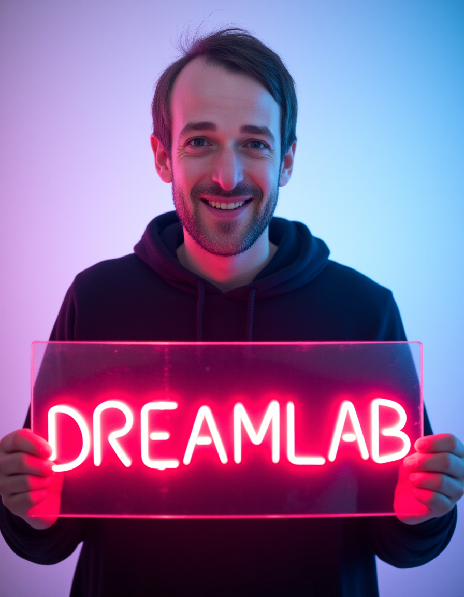

Reddit: Flux dev lora training use SimpleTuner
- This web link has been automatically summarised Title: Flux dev lora training use SimpleTuner, it works with 4090. Detail:
- Finetuning Flux Dev on a 3090! (Local LoRA Training) - YouTube
Flux+ Detailer: Photorealistic Model Overview
- This web link has been automatically summarised
- Model Overview
- Flux+ Detailer is a photorealism model developed by Black Forest Labs under a non-commercial license. It excels in deep semantic comprehension, capturing emotions and detailed understanding of paragraphs.
- The model uses a curated dataset to enhance image generation, providing quality and precision.
- Technical Information
- Identified as LoRA type with a base model of Flux.1, it underwent 2,500 training steps and one epoch.
- SafeTensor file format offered at 21.39 MB, confirmed as verified.
- Usage and Workflows
- Designed for use with ComfyUI and accompanied by workflows to optimise usage.
- Users are encouraged to redownload the updated versions as both versions are consolidated into one file.
- Community and Support
- Very positive reviews from 919 users underline its reliability.
- Acknowledgments to users and testers, highlighting collaborative development efforts. Topics: Deep Learning, Model Optimisation and Performance, Open Generative AI tools
- https://cointelegraph.com/news/half-10-most-valuable-companies-making-metaverse-hardware
- https://medium.com/firebird-technologies/auto-analyst-2-0-the-ai-data-analytics-system-26aec602928e
- Model Overview
ComfyUI’s Innovative Flux Inpainting
- This web link has been automatically summarised
- ComfyUI introduces the Flux , an advanced AI image generation model available in three variants:
- FLUX.1 [pro] for superior performance;
- FLUX.1 [dev] for efficient non-commercial applications;
- FLUX.1 [schnell] for rapid local development.
- These models are designed to excel in prompt adherence, visual quality, and output diversity, making them ideal for various image generation tasks.
- Video tutorials are available via the YouTube channel CgTopTips, offering guidance on using these models effectively.
- The page provides links to essential resources like sample images and detailed node configurations, showcasing the underlying architecture of the ComfyUI platform.
- Node details include a range of primitive and custom nodes, such as FluxGuidance, BasicGuider, SamplerCustomAdvanced, and more.
- The platform supports different operations like image loading and resizing, inpainting model conditioning, and advanced diffusion techniques.
- Despite the comprehensive offering, there are no user reviews or discussions available at the moment. Topics: artificial intelligence, Flux Inpainting Technique, ComfyUI
Training
- If using the Fp8 dev Flux model, to get good results make sure and use the fp8_e4m3fn version.
- Use the lora at about strength of 0.7-.75. Higher strengths will increase likelihood of generating the little details better but also increase chances of unwanted artifacts like messy fingers and other unwanted things. Lowering the strength below 0.7 will increase the cohesion of the image.
- In comfy for the model sampling flux node make sure and use the mas_shift strength of .5 and base_shift at 0.5 respectively.
- Use Euler as the sampler and Beta as the scheduler with 25 steps minimum.
- Higher resolutions like 1024x1400 or 1024x1216 seem to produce best results. Also use 2x3 aspect ratio (portrait) for best results.
- It was trained on 100 images and manual caption pair’s all in “cowboy shot” where the subject is seen from thighs up, so the images generated with this lora will be very biased in that camera shot and angle. A person seen from different angles can be generated successfully with good quality but you need to reduce the strength of the lora to prevent mutations and other cohesion issues for other angles, so play around with the strength of the lora for best results in your use case.
- This lora was trained on an A100 using the simple tuner training script (props to the dev!). The lora was trained on an fp16 dev base flux model, during training it was using about 27gb worth of VRAM for the following settings. The training speeds are about 2.3 sec/it on the A100. We used prodigy with constant, 64 rank and 64 alpha, bf16, gamma 5. No dropout used, batch size of 1 (batch size 1 yields better results versus using any other batch size).
- It takes quite a while for the concept to converge decently at about 350 steps per image minimum and 650 steps per image for good results. Lots of tests were performed to converge on the best hyperparameters and this is what we settled on (more testing needed for manual hyperparameters as I expect a large speedup with use of adam8w and such..).
- Some other notes of interest. We trained on an fp8 flux variant and results were just as good as the fp16 flux model at the cost of 2x convergence speed. That means it now took 700 minimum steps to converge on the subject decently and 1400 steps to converge on a good result. Training on an fp8 flux model took about 16.3gb worth of vram with our settings so I don’t see a reason training cant happen on any card that has that VRAM, and possibly with some optimizations maybe could even happen on cards with 16gb of vram for fp8 lora training.
Controlnet
Resources
-
(2047) Discord | 💡-announcement | XLabs AI
-
whatever this mad thing is [FLUX] Diagram of UNET / DiT and exotic merging methods (v8.01) | Civitai
-
https://www.reddit.com/r/StableDiffusion/comments/1er8q13/an_updated_flux_canny_controlnet_released_by/ Flux Stable Diffusion Controlnet and similar
-
https://huggingface.co/kudzueye/boreal-flux-dev-v2 Flux LoRA DoRA etc
-
https://github.com/camenduru/comfyui-colab/blob/main/workflow/flux_image_to_image.json flux ComfyWorkFlows
-
Text Guided Flux Inpainting - a Hugging Face Space by Gradio-Community Segmentation and Identification
-
(17) Post | Feed | LinkedIn KOHYA Dreambooth and similar Flux
-
https://huggingface.co/alimama-creative/FLUX.1-dev-Controlnet-Inpainting-Alpha Controlnet and similar Flux
-
https://civitai.com/models/731324 Flux Social Media Image Generator Death of the Internet
-
docs/docs/getting-started/env-configuration.md at improve-flux-docs · JohnTheNerd/docs (github.com) Flux ComfyUI Open Webui and Pipelines
-
https://github.com/camenduru/comfyui-colab/blob/main/workflow/flux_image_to_image.json flux
-
city96/ComfyUI-GGUF: GGUF Quantization support for native ComfyUI models (github.com) ComfyUI Model Optimisation and Performance Flux
-
https://github.com/comfyanonymous/ComfyUI/commit/d0b7ab88ba0f1cb4ab16e0425f5229e60c934536 Flux Model Optimisation and Performance
-
https://medium.com/@furkangozukara/ultimate-flux-lora-training-tutorial-windows-and-cloud-deployment-abb72f21cbf8 Flux LoRA
-
https://github.com/ToTheBeginning/PuLID Face Swap Flux style transfer

-
https://www.reddit.com/r/StableDiffusion/comments/1fkeei6/a_simple_flux_pipeline_workflow/
-
dagthomas/comfyui_dagthomas: ComfyUI SDXL Auto Prompter (github.com) flux ComfyUI Prompt Engineering
-
https://www.reddit.com/r/StableDiffusion/comments/1fkdp6j/flux_stability_video_how_to_automate_short_videos/ AI Video
-
https://openart.ai/workflows/tenofas/flux-detailer-with-latent-noise-injection/TzQXKBjYhIKI75ctU209
-
ComfyUI — Flux Advanced - v5-OC | Stable Diffusion Workflows | Civitai ComfyWorkFlows
-
https://www.reddit.com/r/StableDiffusion/comments/1f2e1xp/hyper_flux_8_steps_lora_released/
-
https://www.reddit.com/r/FluxAI/comments/1f1uhnm/new_flux_controlnet_union_model_just_dropped/
-
https://www.reddit.com/r/comfyui/comments/1ezlzsp/flux_controlnets_3d_scenes_in_playbook_web_editor/ visionflow
-
https://www.reddit.com/r/FluxAI/comments/1esyy3u/flux_dev_workflow_v20_for_loras_face_detailer_and/
-
https://huggingface.co/spaces/Gradio-Community/Text-guided-Flux-Inpainting
-
https://github.com/camenduru/comfyui-colab/blob/main/workflow/flux_image_to_image.json ComfyWorkFlows
Training LoRA and Fine Tuning
-
The Flux 1D fine-tuning discussion reveals a rapidly evolving landscape of techniques and challenges. Here’s a distilled summary of the best options and tips from the community, prioritizing newer information:
Best Fine-Tuning Options:
LoRA (Low-Rank Adaptation): Remains the most popular and accessible method due to lower VRAM requirements and good results. Ranks of 16, 32, and even as low as 4 or 2 are being used successfully, depending on the task. Alpha typically matches the rank.
Full Fine Tuning (FFT): Offers potentially superior results, especially for complex concepts and preventing overfitting, but demands significantly more VRAM (around 24GB or more, even with optimizations). 2kpr’s method (integrated into Kohya’s sd-scripts) allows FFT within 24GB using BF16, stochastic rounding, and fused backpass, with optional block swapping for even lower VRAM.
Key Training Considerations and Tips:
LR (Learning Rate): For LoRA, 1e-4 seems a good starting point, with some finding success at 4e-4 or even higher depending on rank and optimizer. For FFT, significantly lower LRs are necessary (around 1e-5 to 1e-6 or even lower).
Optimizer: AdamW and Prodigy are both used for LoRA, with Prodigy often converging faster but offering less control. Adafactor with stochastic rounding is crucial for FFT with 2kpr’s method. CAME is also being explored.
Captions: While some early advice suggested minimal or no captions for Flux, the consensus now leans towards detailed, natural language captions, especially for complex subjects and preventing overfitting. Using an LLM like CogVLM or Florence2 is recommended. Avoid overly long, “word salad” captions. Concise and descriptive captions targeting the specific learning objective seem to work best. For style training, include the type of art (painting, photo, etc.) and the style name in the caption. For characters, caption diverse images and avoid overfitting on specific outfits or backgrounds.
Dataset: High-quality images are crucial. Flux is sensitive to artifacts, so clean your dataset. For likeness, 12-20 varied images are sufficient. For style, aim for diversity of content, pose, and lighting within the style. For characters, include variations in pose, expression, clothing, and background to maximize flexibility. Too similar images can lead to overfitting. Background removal can be helpful for characters and some styles. Avoid including famous faces in your dataset if you don’t intend to train them specifically.
Data Augmentation: Flipping is generally safe. Cropping can be helpful, but avoid scaling if possible as it can introduce artifacts.
Multi-Resolution Training: While initially recommended, the community now seems divided. It might be helpful for some tasks but can degrade detail and introduce artifacts in others, especially styles. Consider generating only at the highest resolution you plan to use.
Regularization: Crucial for preventing overfitting and concept bleed, especially in multi-concept training and FFT. Current methods aren’t as effective as with previous models. Using a combination of captioned and uncaptioned regularisation images with varied styles is suggested. More research is needed in this area.
T5 Training: Still experimental and resource-intensive. May be useful for enhancing specific concepts or prompt understanding, but requires careful tuning. Combining natural language captions with tags is being explored.
CLIP Training: Has become a recommended practice alongside training the transformer (Unet in other models). It seems crucial for good results, especially with more complex concepts and styles.
Validation: Validation images generated during training can be misleading with Flux, often looking very different from inference results. Rely on thorough testing with a variety of prompts and styles during and after training.
ComfyUI Updates: Keeping ComfyUI up to date is essential as new features and bug fixes (particularly related to LoRA strength and weight dtype) are frequently released.
Tools: SimpleTuner, Ostris’ ai-toolkit, and Kohya’s sd-scripts are the main training tools. Kohya’s scripts now include 2kpr’s FFT method. Kijai’s ComfyUI-FluxTrainer provides ComfyUI nodes for Kohya’s scripts.
Current Issues and Unsolved Challenges:
Concept Bleed: A persistent problem, particularly in multi-concept training and FFT. Regularization techniques are being explored, but a definitive solution is yet to be found.
Validation Image Accuracy: Validation images don’t reliably predict inference results.
T5 Training Optimization: Still resource-intensive and requires further research.
Style Training: Flux seems to favor realism and can be more challenging to train for stylized outputs than previous models. Detailed captions and lower guidance values seem helpful.
Overfitting: Can happen quickly, especially with smaller datasets and larger ranks. Careful dataset curation, captioning, and monitoring are crucial.
This space is rapidly changing. Stay tuned to the community for the latest developments and optimized training practices.
User extend and expand. Give me settings and software suggestions where possible
Model 111.2s Let’s extend and expand on Flux 1D fine-tuning, providing concrete settings and software suggestions:
- LoRA Training:
Software: SimpleTuner, Ostris’ ai-toolkit, Kohya’s sd-scripts (via ComfyUI nodes with ComfyUI-FluxTrainer)
Rank/Alpha: Start with 32/32 or 16/16. Experiment with lower ranks (4/4, even 2/2) for styles where subtle changes are desired.
LR: 1e-4 is a good default. If training stalls, try 4e-4. If it overfits quickly, try lower values.
Optimizer: AdamW is generally recommended. Prodigy can be used for faster convergence.
Steps: 2000-3000 steps for likeness, style and character training. Experiment with fewer steps for small, focused datasets. For style training, test at multiple checkpoints as results can oscillate.
Captions: Concise and descriptive. Include the type of art and style name. For characters, vary pose, expression, clothing, and background. Example: “portrait photo of ohwx woman in a red dress, standing in a garden”
Dataset: 12-20 images for likeness, 300+ for style or character, focusing on diversity.
Example config.env (SimpleTuner):
export FLUX=true export MODEL_NAME=“black-forest-labs/FLUX.1-dev” export MAX_NUM_STEPS=3000 export LEARNING_RATE=1e-4 export TRAIN_BATCH_SIZE=1 # Or higher if VRAM allows export GRADIENT_ACCUMULATION_STEPS=1 export LR_SCHEDULE=“constant” export CAPTION_DROPOUT_PROBABILITY=0.05 # Or lower, experiment export OPTIMIZER=“adamw_bf16” # or “prodigy” export MIXED_PRECISION=“bf16” export TRAINER_EXTRA_ARGS=“—lora_rank=32 —lora_alpha=32 —keep_vae_loaded —clip_skip=2” Use code with caution. ComfyUI Workflow for Inference: Use the Load/Save Lora and Model Sampling Flux nodes. Adjust the Lora strength and guidance scale according to the trained LoRA. Consider using the Adaptive Guidance V2 node to control guidance more precisely.
- Full Fine Tuning (FFT):
Software: 2kpr’s trainer (when released), Kohya’s sd-scripts (with caveats regarding stochastic rounding)
LR: Much lower than for LoRA, start with 1e-5 or 1e-6 and adjust as needed.
Optimizer: Adafactor with stochastic rounding is essential with 2kpr’s method.
Steps: Potentially fewer steps needed than LoRA due to “overkill” effect. Start with 500-1000 and monitor progress.
Captions: Similar to LoRA, detailed and natural language.
Dataset: Similar to LoRA, prioritize quality and diversity.
Example train.toml (2kpr’s trainer - illustrative):
model_path = “path/to/your/flux1-dev.safetensors” training_data_path = “path/to/your/training/data” output_dir = “path/to/your/output/directory”
batch_size = 1 gradient_accumulation_steps = 1 learning_rate = 1e-5 # Lower for FFT optimizer_type = “adafactor” scheduler_type = “constant” max_train_steps = 1000 mixed_precision = “bf16” stochastic_rounding = true gradient_checkpointing = false # If VRAM allows blocks_to_swap = 0, # If VRAM allows
Text Encoder settings (CLIP and T5):
train_clip_l = true # or false train_t5 = true # or false clip_learning_rate = 1e-6 # Usually lower than unet LR t5_learning_rate = 1e-6 # Usually lower than unet LR Use code with caution. Toml ComfyUI Workflow for Inference: Use the resulting .safetensors file like the base Flux model. You can also extract LoRAs from the FFT checkpoint with 2kpr’s extraction script (or equivalent).
- Training Text Encoders (CLIP and T5):
Status: Still experimental and needs careful consideration. Some find it beneficial for improving concept separation and flexibility. Others find it makes little difference or degrades results, depending on the dataset, captions, and task.
Software: Currently enabled in Kohya’s sd-scripts and Kijai’s ComfyUI nodes. 2kpr’s trainer will also offer this functionality.
LR: Generally much lower than the Unet/transformer LR. Start with 1e-6 for CLIP and even lower for T5 (1e-7 or less). Separate LRs for CLIP and T5 are often required.
ComfyUI workflow: Use Kijai’s Flux Train node, enabling Train Clip L and/or Train T5. Provide appropriate learning rates in the respective inputs.
- LoRA Merging and Pruning:
Merging in ComfyUI: Use two (or more) Lora Loader nodes, followed by a Lora Merge node.
Pruning in ComfyUI: Use Kijai’s Block Lora Loader node to selectively load and adjust the strength of individual blocks from a LoRA. This can be used to identify which blocks are responsible for desired (or undesired) effects and effectively prune the LoRA by setting unimportant block strengths to 0. Currently, no direct save functionality exists for the pruned LoRA, but merging it with the base model is possible.
Merging in Kohya: Use merge_lora.py
Alternative Strategy: Fine-tune a LoRA, then merge it into the base model, then fine-tune again.
Scaling LoRAs: Use 2kpr’s scale_lora.py script to adjust the overall strength of a LoRA. This can be helpful to normalize LoRAs from different trainers or training runs.
- Other Key Tools and Techniques:
Captioning: TagGUI locally supports various VLMs (including CogVLM) for improved captioning. Prompt engineering for captioning is important.
Background Removal: Use BRIA, InspyreNet, SAM2, or Photoroom Pro for higher-quality masks.
Upscaling: Ultimate SD Upscale can be used. Consider generating at your desired resolution directly, as Flux handles high resolutions well.
Inpainting: ComfyUI’s Inpaint node with appropriate mask generation.
Regularization: Experiment with different ratios of captioned vs. uncaptioned and style-varied regularization images. Further research is needed in this area for Flux.
Debugging and Monitoring: Use ComfyUI’s built-in logging, Tensorboard, and 2kpr’s trainer’s periodic loss charts.
This expanded information should provide a more concrete starting point for fine-tuning Flux 1D. Remember to experiment, document your findings, and share your results with the community. The field is still under active development, so continuous learning and adaptation are key.
User can you add in any tips and tricks and prompts?
Model 83.7s Let’s add some prompts, tips, and tricks to fine-tune Flux 1D effectively:
Prompts for Captioning (using an LLM like CogVLM):
General: “A detailed, objective description of this image, focusing on visual elements only. Avoid subjective interpretations or artistic descriptions.”
Character Focus: “A detailed description of this character, including their physical attributes, clothing, pose, and expression. The character’s name is [character name].”
Style Focus: “Describe the artistic style of this image, focusing on lines, colors, composition, and textures. The type of art is [painting/photo/illustration/etc.]. The style is [style name].”
Specific Details: You can combine the above with instructions for specific details: “Describe this image. Focus on the character’s facial features. The character’s name is [character name].”
Tips and Tricks for Fine-Tuning:
Start Simple, Then Scale: Begin with LoRA and small datasets before moving to FFT and larger datasets. This helps develop intuition and find good starting parameters.
Test Extensively: Use a variety of prompts, styles, and resolutions during and after training. Don’t rely solely on validation images. Pay close attention to details like anatomy, coherence, and concept bleed.
Iterative Approach: Fine-tuning is an iterative process. Train, test, adjust parameters, and retrain. Don’t be afraid to experiment.
Document Everything: Keep track of your datasets, captions, parameters, and results. This allows for better analysis and reproduction. Version your LoRAs and checkpoints.
Community Resources: Follow the Flux fine-tuning communities (Discord, Reddit, etc.) for the latest developments, tips, and shared experiences.
Pre-trained Models: Explore existing LoRAs and checkpoints on Civitai and Hugging Face for inspiration and as starting points for your own fine-tuning.
Seed Exploration: Even with Flux, seed variation can have a noticeable effect on outputs. Try different seeds to see the range of possibilities with your fine-tuned model.
Guidance Scale Tweaking: Experiment with lower guidance scales (2-3) during inference, especially for artistic styles.
LoRA Weight Adjustment: Fine-tune the LoRA weight during inference to control its strength and balance it with other LoRAs or concepts.
Prompts for Testing Generalization and Flexibility:
Likeness:
Simple Prompts: “[character name], portrait photo”
Style Variations: “[character name], painting by [artist name]” , “[character name], anime style”
Complex Prompts: “[character name] riding a unicorn in a cyberpunk city, photorealistic”
Negative Prompts: While not directly supported in Flux training, test with negative prompts during inference to see if they work as expected.
Style:
Basic Prompts: “a woman in a dress, [style name] artstyle”
Different Subjects: “a cat, [style name] artstyle”, “a spaceship, [style name] artstyle”
Complex Scenes: “A group of people in a medieval market, [style name] painting”
Multi-Concept: Combine prompts that test each concept individually and together. For example, if you trained a LoRA with a character and a specific object, test with prompts that include only the character, only the object, and both.
Specific Prompting Tips for Flux:
Two-Word Classes: For style and character LoRAs, use a two-word class to provide more context. Example: “ohwx character name, woman elf” or “ohwx style name, painting artstyle”
Descriptive Captions: For complex subjects or scenes, provide short, clear, natural language descriptions focusing on the elements you want Flux to learn.
Object and Background Specificity: For styles and characters, if you don’t want certain objects or backgrounds to be associated with the LoRA, include them in the captions without the trigger word. This helps prevent overfitting and bleeding.
“Unpromptable” Concepts: Flux can struggle with some artistic styles or concepts that are hard to describe with prompts. In these cases, using an IPAdapter (when available) might be a more effective approach.
Prompt Engineering: Experiment with different phrasing and prompt structures to see how Flux interprets them. Some concepts might require more specific or descriptive language than others.
Leverage Prior Knowledge: Flux has extensive prior knowledge. Start with simple prompts and gradually add detail as needed. See if you can get the desired results without explicitly mentioning every detail.
By combining these tips, tricks, and prompts, you’ll be well on your way to mastering the art of Flux 1D fine-tuning. Remember, experimentation and community engagement are your best allies in this rapidly evolving field.